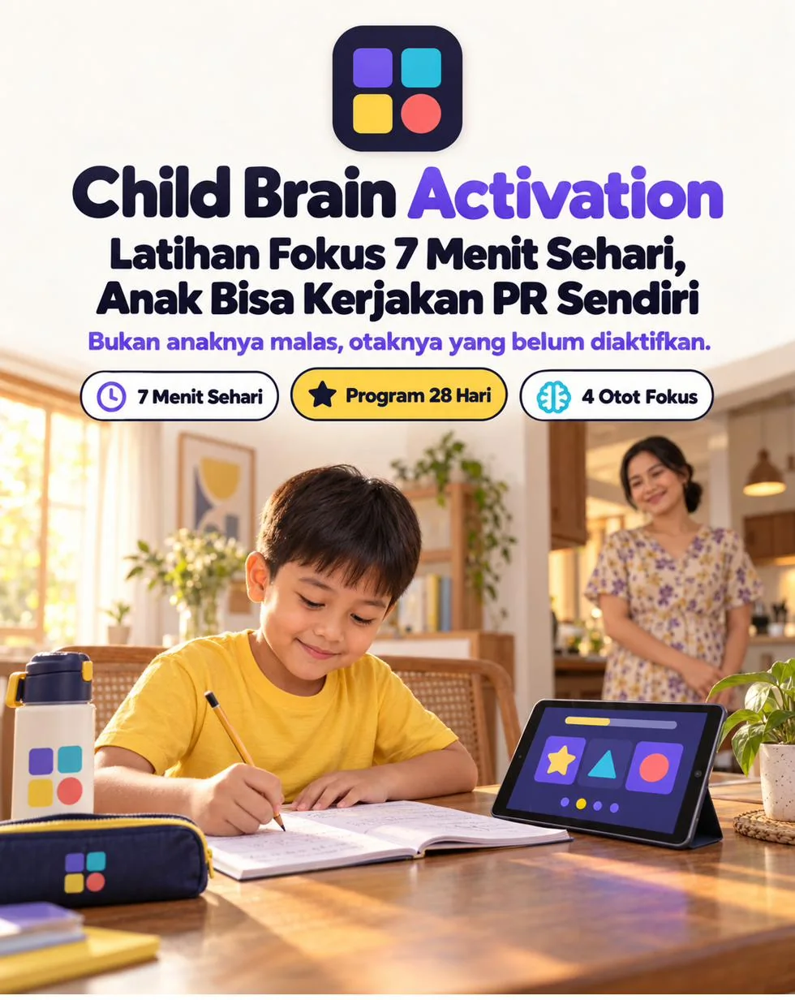
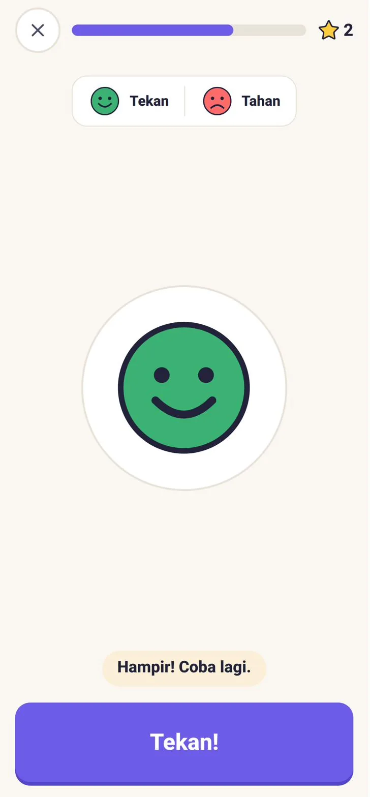
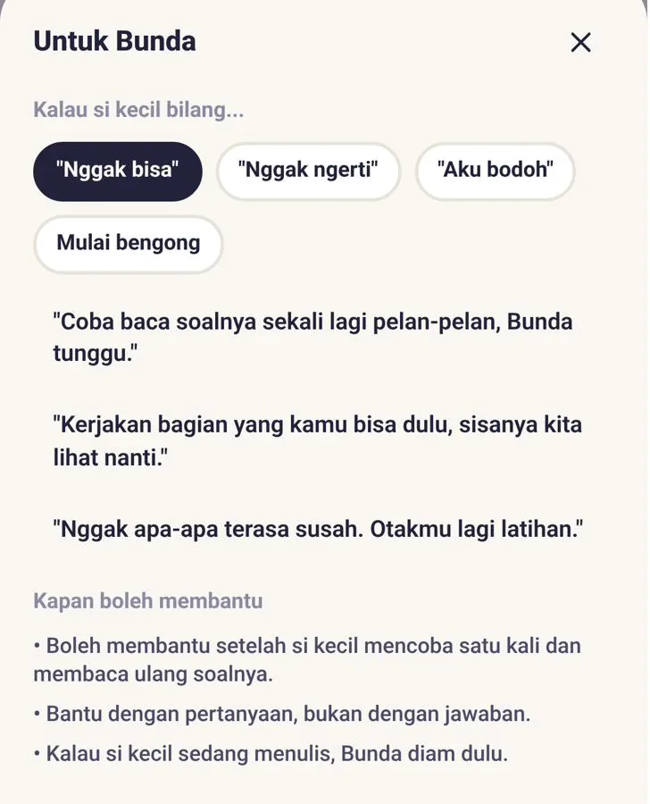
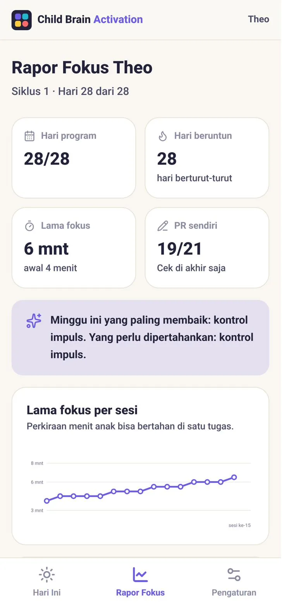
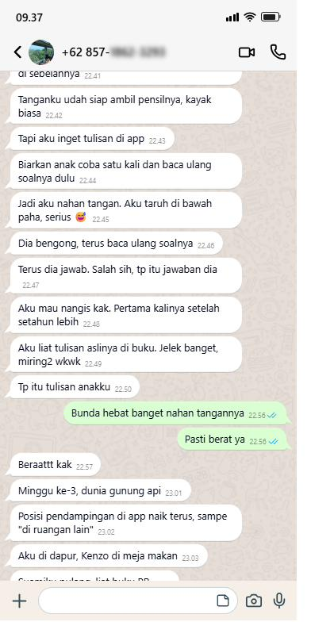
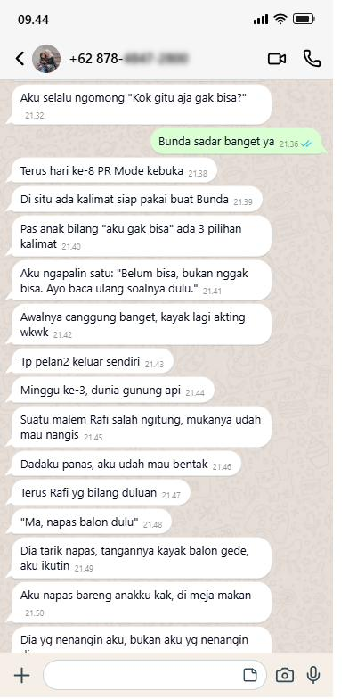
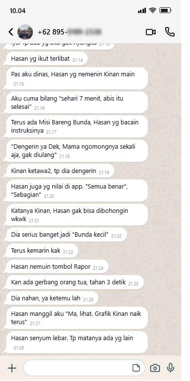

Anak yang bengong di depan PR, lupa bawa tas, dan bilang “aku nggak bisa” biasanya bukan kurang pintar. Ada empat kemampuan fokus yang belum terlatih. Child Brain Activation adalah app di HP atau laptop yang melatih keempatnya lewat permainan 7 menit sehari selama 28 hari, lalu menjembatani latihannya ke PR yang asli.
Dibuka dari browser HP, tablet, atau laptop. Tanpa install, tanpa akun.
“Udah empat puluh menit, baru dua soal.”
Bunda sudah duduk di sebelahnya dari tadi. Pensilnya diputar-putar, halamannya dibolak-balik, matanya ke mana-mana. Begitu Bunda berdiri sebentar ke dapur, PR-nya berhenti total.
“Tasnya mana, Nak?”
Sudah di depan pagar, sepatu baru sebelah, bekal masih di meja, tas tertinggal di kursi. Instruksi tiga langkah, yang dikerjakan cuma yang pertama. Lagi.
“Aku nggak bisa, Ma. Aku bodoh.”
Satu soal terasa susah, dia langsung menangis dan menutup buku. Bunda ikut naik nada, malamnya berakhir dengan dua orang yang sama-sama capek dan PR yang tetap belum selesai.
Tiga adegan ini kelihatan beda, dan semuanya bukan karena anak Bunda kurang pintar atau Bunda kurang sabar. Akarnya sama: kemampuan fokus yang belum pernah dilatih secara khusus.
Anak disuruh fokus setiap hari, tapi jarang ada yang benar-benar melatih kemampuan fokusnya. Padahal fokus terdiri dari empat kemampuan yang berbeda. Anak yang bengong, anak yang lupa instruksi, anak yang terburu-buru, dan anak yang gampang menyerah, masing-masing lemah di otot yang berbeda.
Bertahan pada satu hal sampai selesai, tanpa pindah ke hal lain.
Dilatih lewat Lampu Hijau, Jaga Matamu, Detektif Beda
Mengingat instruksi 2 sampai 3 langkah sambil mengerjakannya.
Dilatih lewat Urutan Rahasia, Isi Tas, Kartu Pasangan, dan Misi Bareng Bunda
Menahan diri, membaca soal sampai habis sebelum menjawab.
Dilatih lewat Tangkap yang Benar, Kebalikan, Patung Diam
Tetap mencoba saat terasa susah, bukan menangis lalu menutup buku.
Dilatih lewat Susun Balok dan “Hampir! Coba lagi” di setiap permainan
Di psikologi anak, keempat kemampuan ini dikenal sebagai bagian dari fungsi eksekutif. Child Brain Activation melatihnya dengan cara yang paling anak suka: bermain. Tingkat kesulitan tiap permainan naik turun sendiri, supaya anak selalu “menang tipis”, tidak kegampangan sampai bosan, tidak kesusahan sampai menyerah.
Main dulu 7 menit, baru ke PR.
Bukan les tambahan. Anak merasa sedang bermain, padahal ototnya sedang dilatih.
Data singkat anak, lalu 12 pertanyaan tentang kebiasaannya sehari-hari: bengong saat mendengarkan, lupa bawa barang, menjawab sebelum soal selesai dibaca, menangis saat soal terasa susah.
Kekuatan 4 otot fokus dalam bentuk batang, satu otot yang dilatih duluan, dan level awal permainan yang pas untuk umurnya.
Dari layar Hari Ini, satu tombol. Anak main 3 permainan, ditutup Napas Balon, lalu dapat bintang dan satu stiker baru. Selesai untuk hari itu.
Target: duduk 10 menit tanpa bangun.
Target: instruksi 3 langkah dikerjakan lengkap.
Target: membaca soal sampai selesai, tidak mengamuk saat susah.
Target: PR dikerjakan, Bunda di ruangan lain.
Sesi 7 Menit
Sepuluh permainan pendek, masing-masing dengan satu kalimat instruksi dan contoh gerak sebelum mulai. Tiap 5 percobaan, app menilai: kalau terlalu gampang, naik sedikit. Kalau terlalu susah, turun sedikit. Anak tidak pernah melihat kata “level turun”, yang dia lihat cuma bintang.
Keliru bukan “salah”. Yang muncul “Hampir! Coba lagi.”

PR Mode
Bunda ketik jumlah soalnya, app memecahnya jadi kartu 1 sampai 3 soal. Waktu tiap kartu ikut lama fokus anak, ada jeda napas balon di antaranya, dan bunyi halus saat waktunya pindah kartu.
Saat anak bilang “nggak bisa”, “nggak ngerti”, “aku bodoh”, atau mulai bengong, ada kalimat siap pakai untuk Bunda. Salah satunya:
“Kamu bukan bodoh. Ini cuma belum biasa.”
Posisi Bunda pelan-pelan bergeser: dari duduk di sebelah, ke seberang meja, sampai ruangan lain.

Rapor Fokus
Grafik lama fokus per sesi, kekuatan 4 otot per minggu, jumlah PR yang dikerjakan sendiri, dan posisi pendampingan sekarang.
Di hari ke-14 dan ke-28 ada Cek Ulang singkat, jadi Bunda bisa membandingkan sebelum dan sesudah.

Misi Bareng Bunda: satu menit, tanpa gadget. Bunda membacakan instruksi sekali saja, misalnya ambil sendok di dapur, taruh di meja, lalu tepuk tangan dua kali. Anak mengerjakan, Bunda menilai. Ada juga Misi Pagi dan Misi Sore: papan centang bergambar untuk tas, sepatu, botol minum, dan buku PR.
Tiap sesi selesai, satu stiker baru masuk album. Ada 60 stiker untuk dikumpulkan, Peta 28 Hari yang maju sendiri, dan Piagam di hari ke-28. Area Bunda, yaitu Rapor dan Pengaturan, dikunci tombol tahan 3 detik supaya tidak diutak-atik anak.
memetakan 4 otot fokus anak lewat Cek Otak, melatihnya 7 menit sehari dengan permainan yang menyesuaikan kemampuannya, menjembatani latihan ke PR lewat PR Mode, dan menampilkan kemajuannya dalam grafik.
terapi, alat diagnosis, les, atau video pelajaran. App ini tidak mengajarkan materi sekolah dan tidak menjanjikan nilai naik. Yang dilatih adalah kebiasaan fokus yang bisa Bunda lihat sendiri: lama duduk, tugas selesai, dan PR yang dikerjakan tanpa ditungguin.
Kalau polanya sudah lebih dari 6 bulan dan terjadi di rumah maupun di sekolah, anak sangat sulit diam hampir sepanjang hari, atau anak kelas 2 ke atas belum bisa membaca kalimat sederhana, ada baiknya juga dilihat oleh psikolog anak. Latihan fokus tetap aman dijalankan untuk semua anak.
| Ditungguin tiap malam | Buku aktivitas brain gym | Game di HP | Child Brain Activation | |
|---|---|---|---|---|
| Yang dilatih | Tidak ada, PR-nya dikejar selesai | Lembar latihan atau gerakan | Umumnya hiburan | 4 otot fokus, satu per satu |
| Ikut kemampuan anak | Tidak | Sama untuk semua anak | Jarang | Naik turun otomatis tiap 5 percobaan |
| Nyambung ke PR | PR-nya iya, fokusnya tidak | Tidak | Tidak | PR Mode dan kalimat siap pakai untuk Bunda |
| Bunda tahu kemajuannya | Dari perasaan | Dari halaman yang terisi | Skor game | Grafik lama fokus, sebelum dan sesudah |
| Waktu per hari | Bisa 1 sampai 2 jam | Tergantung mood | Sering kebablasan | 7 menit, lalu selesai |
| Biaya | Kesabaran Bunda | Puluhan ribu, habis sekali isi | Banyak yang gratis, penuh iklan | Rp127.000 sekali bayar |
Geser untuk melihat cerita lainnya. Nomor disensor untuk menjaga privasi.



Buku aktivitas brain gym dijual puluhan ribu, habis sekali isi, dan soalnya sama untuk semua anak. Child Brain Activation berisi 10 permainan yang levelnya ikut kemampuan anak Bunda, ditambah PR Mode dan Rapor, dan bisa dipakai lebih dari satu anak.
Sekali bayar. Semua fitur langsung terbuka, tanpa paket basic dan premium.
Panduan Akses berisi kode masuk dikirim ke email yang Bunda pakai saat order.
Bisa pakai QRIS, transfer bank, atau e-wallet.
Klik link biru yang diawali drive.google.com. Bukan tombol "Unduh Produk". Kalau belum ada di kotak masuk, cek folder Spam atau Promosi.
Buka link app yang ada di Panduan Akses, masukkan kode, lalu isi Cek Otak. Hari pertama langsung bisa main.
Tenang, Bunda cuma salah klik. Balik ke email yang sama, lalu:
Bunda sudah coba menungguin, mengomel, mengurangi HP, sampai les tambahan. Satu hal yang belum pernah dicoba: melatih otot fokusnya langsung, sedikit demi sedikit, tiap hari.
7 menit hari ini. 28 hari ke depan.
Dibuka dari browser HP, tablet, atau laptop. Tanpa install, tanpa akun.